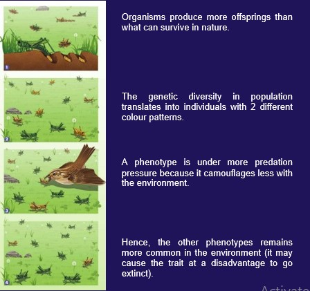

Natural Selection is the primary mechanism of evolution, explaining how populations of organisms change over generations to become better adapted to their environment. Proposed by Charles Darwin, it hinges on four fundamental observations:
Key Pillars of Natural Selection
- Variation:
- Concept: Individuals within a population exhibit different traits
- Source: Primarily mutations (random DNA changes) and sexual recombination
- Example: Different fur colors in a rabbit population
- Overpopulation:
- Concept: Organisms produce more offspring than can possibly survive to maturity.
- Rationale: Ensures survival of some offspring in a competitive environment
- Example: A single fish lays thousands of eggs.
- Competition
- Concept: A single fish lays thousands of eggs.
- Outcome: A "struggle for existence."
- Example: Plants competing for sunlight in a dense forest.
- Differencial Surviavl and Competition
- What is fitness: It doesn't mean strongest or fastest, but rather the ability to survive and pass on genes to the next generation in a given environment. An organism that lives long but doesn't reproduce has zero fitness.
- Concept: Individuals with traits that make them better suited (more "fit") to their specific environment are more likely to survive, thrive, and crucially, reproduce successfully.
- Gene transmission: "Fit" organisms produce more offspring, which means they pass on their beneficial traits (and the genes for those traits) more frequently. While, Individuals with less favorable traits struggle to survive, reproduce less, or die before reproducing. Their genes are less likely to be passed on.
- Result: Over generations, the proportion of beneficial traits (and the genes that code for them) increases in the population, while less beneficial traits become less common or disappear. This differential success in passing on genes is the driving force of natural selection.
Natural Selection in action:

Key Takeaways
- Mechanisms of adaptation Explains how species become highly suited to their specific niches.
- Driver of Bio DiversityAccounts for the vast array of life forms.
- Relevance to current issuesExplains antibiotic resistance in bacteria, pesticide resistance in insects.
- Not a Concious Choice Organisms do not choose to evolve; selection acts on existing variation.
- Population Level Change Evolution occurs in populations, not individuals.
Written by Kasiban Parthipan